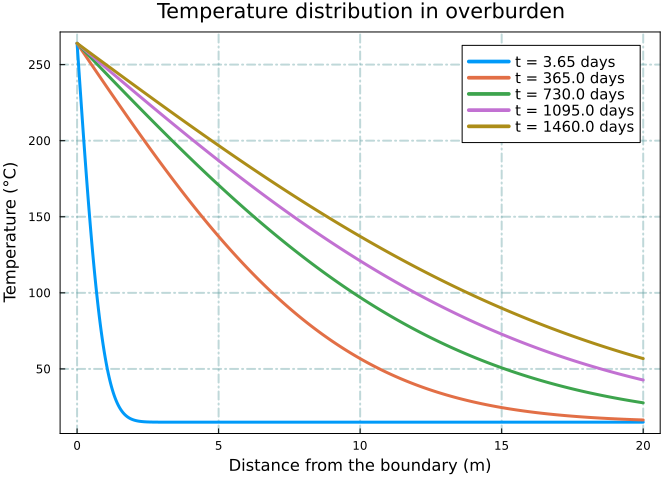
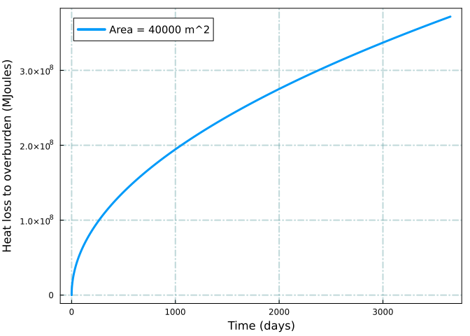

using DataFrames
using ShiftedArrays: lag
using SpecialFunctions: erf, erfc
using Plots
using StatsPlots
using SteamTables: Tsat, SatHL, SatHV, SpecificHThermal Recovery - Part II
Heat Conduction in a 1D Reservoir
julia
thermal recovery
heat conduction
heat loss
Disclaimer
This blog post is for educational purposes only. Any commercial use of the information provided in this blog post is prohibited. The author is not responsible for any damage or loss caused by the use of the information provided in this blog post.
Introduction
Thermal operations, also known as thermal enhanced oil recovery (EOR), are techniques used to increase the production of heavy oil and bitumen by injecting steam or other high-temperature fluids into the reservoir. The injected fluid heats the reservoir and reduces the viscosity of the heavy oil, making it easier to flow through the reservoir and towards the production well.
However, one of the major challenges of thermal operations is the significant heat loss to the surrounding overburden, which can lead to decreased efficiency and increased costs. Heat loss occurs as the hot steam or fluid travels through the reservoir and comes into contact with the cooler overburden, resulting in heat transfer between the reservoir and overburden.
To optimize thermal operations and minimize heat loss, it is important to understand the dynamics of heat transfer between the reservoir and overburden. This can be achieved through the use of mathematical models and simulations, which can help predict the temperature distribution in the reservoir and overburden, and optimize the injection and production rates.
In this post we will use the Julia programming language to solve the heat loss to overburden in thermal operations. This problem is solved as a 1D heat conduction into overburden. Heat transfer is assumed to occur at the reservoir/overburden boundary. The overburden is considered as a semi-infinite homogenous reservoir.
Three different scanrios will be discussed in this post:
- Heat conduction through a constant surface area
- Heat conduction from an spreading hot zone within a semi-infinite 1-D reservoir
- Heat conduction from an spreading hot zone within a confined 1-D reservoir
These models are explained in detail in (Butler 1997).
1-D heat conduction equation
The 1-D heat conduction equation is given by:
\[\frac{\partial T}{\partial t} = \frac{\partial}{\partial x} \left( \alpha \frac{\partial T}{\partial x} \right)\]
where \(T\) is the temperature, \(t\) is time, \(x\) is the distance from the steam interface, and \(\alpha\) is the thermal diffusivity. For a semi-infinite medium, the boundary conditions are given by:
\[T(x = 0,t) = T_{steam}\]
\[T(x = \infty,t) = T_{overburden}\]
and the initial condition is given by:
\[T(x ,t = 0) = T_{overburden}\]
The thermal diffusivity is assumed to be a constant. The analytical solution of this problem is given by:
\[T(x,t) = T_{reservoir} + ({T_{steam} - T_{reservoir}}) * erfc(\frac{x}{2 \sqrt{\alpha t}}) \tag{1}\]
where erfc is the complementary error function. The complementary error function is defined as:
\[erfc(x) = 1 - erf(x)\]
where erf is the error function and is defined as:
\[erf(x) = \frac{2}{\sqrt{\pi}} \int_0^x e^{-t^2} dt\]
Loading required packages
Solving the heat conduction equation
For the rest of the post, we will use the following assumptions for the overburden thermal conductivity, overburden thermal diffusivity, steam temperature, and overburden temperature.
- Thermal conductivity:
K = 1.7 W/m/°C" - Thermal diffusivity:
α = 8.333e-7 m^2/s - Steam temperature:
Ts = 264 °C - Overburden temperature:
To = 15 °C
These assumptions will be used to solve the 1-D heat conduction equation using Julia. We will start by defining the required parameters and functions.
# thermal conductivity (J/day/m/°C)
K = 1.7 * 86400
# thermal diffusivity (m^2/day)
α = 8.333e-7 * 86400
# steam temperature (°C)
Ts = 264.0
# overburden temperature (°C)
To = 15.0
# distance from the boundary (m)
x = range(0, 20, length = 10000);Here’s a Julia function that implements the analytical solution for Equation 1:
function solve_heat_conduction_equation(Ts, To, α, x, t)
T = To .+ (Ts .- To) .* erfc.(x ./ (2 .* sqrt.(α .* t)))
return x, T
end;The solution of Equation 1 at different times is shown below.
t = [0.01, 1.0, 2.0, 3.0, 4.0] * 365 # days
df = DataFrame(x = [], T = [], t = [])
for i in 1:length(t)
x, T = solve_heat_conduction_equation(Ts, To, α, x, t[i])
df = vcat(df, DataFrame(x = x, T = T, t = t[i]))
end
@df df plot(:x, :T,
group = :t,
xlabel = "Distance from the boundary (m)",
ylabel = "Temperature (°C)",
label =
reshape(string.("t = ", string.([3.65, 365, 730, 1095, 1460]), " days"), :, 5),
lw = 3,
legend=:topright,
legendfontsize = 10,
frame=:box)
xgrid!(:on, :cadetblue, 2, :dashdot, 0.4)
ygrid!(:on, :cadetblue, 2, :dashdot, 0.4)
Heat loss to overburden
1.0 Heat conduction from a constant surface area
The rate of heat loss to overburden at the reservoir/overburden interface over a constant surface area (A) is given by:
\[q = - K \cdot A (\frac{\partial T}{\partial x})_{x=0} \tag{2}\]
where K is the thermal conductivity, T is the temperature, and x is the distance from the boundary. The cumulative heat loss to overburden is given by:
\[Q_{c} = \int_0^t - K \cdot A (\frac{\partial T}{\partial x})_{_{x=0}} dt \tag{3}\]
where \(t\) is time. Using the temperature profile given in Equation 1, we can calculate the cumulative heat loss to overburden as:
\[Q_{c} = 2 (T_{s} - T_{o}) \cdot K \cdot A \sqrt{\frac{t}{\pi \alpha}}\]
The following function is defined to calculate the cumulative heat loss to overburden.
function cumulative_heat_loss_constant_area(Ts, To, α, K, A, t)
Q = 2.0 * (Ts - To) * K * A * sqrt.(t ./ (π .* α))
return Q
end;For a reservoir/overburden interface with a constant surface area of 40,000 \(\mathrm m^2\), the cumulative heat loss to overburden over 10 years is estimated as follows.
t = 0:1.0:10 * 365 # days
A = 40000.0 # m^2
Q = cumulative_heat_loss_constant_area(Ts, To, α, K, A, t) / 1e6 # MJ
df_Q = DataFrame(t = t, year = t / 365.0, Q = Q)
@df df_Q plot(:t, :Q,
xlabel = "Time (days)",
ylabel = "Heat loss to overburden (MJoules)",
label = "Area = 40000 m^2",
lw = 3,
legend=:topleft,
legendfontsize = 10,
frame=:box)
xgrid!(:on, :cadetblue, 2, :dashdot, 0.4)
ygrid!(:on, :cadetblue, 2, :dashdot, 0.4)
The rate of heat loss to overburden at the reservoir/overburden interface over a constant surface area (A) can be calculated by combining Equation 1 and Equation 2:
\[q = (T_{s} - T_{o}) \cdot K \cdot A \sqrt{\frac{1}{\pi \alpha t}}\]
Here’s the implementation of the function that calculates the rate of heat loss to overburden using the equation mentioned above:
function heat_rate_constant_area(Ts, To, α, K, A, t)
q = (Ts - To) * K * A ./ sqrt.(π * α .* t)
return q
end;The rate of heat loss to overburden over 10 years is plotted below.
t = 0:1.0:10 * 365 # days
A = 40000.0 # m^2
q = heat_rate_constant_area(Ts, To, α, K, A, t) / 1e6 # MJ/day
df_q = DataFrame(t = t, year = t / 365.0, q = q)
@df df_q plot(:t, :q,
xlabel = "Time (days)",
ylabel = "Rate of heat loss to overburden (MJoules/day)",
label = "Area = 40000 m^2",
lw = 3,
legend=:topright,
legendfontsize = 10,
frame=:box)
xgrid!(:on, :cadetblue, 2, :dashdot, 0.4)
ygrid!(:on, :cadetblue, 2, :dashdot, 0.4)The annual heat loss to overburden can be calculated as follows:
df_Q_sub = df_Q[df_Q.year .== round.(df_Q.year, digits = 0), :]
df_Q_sub[!, :Q_lag] = lag(df_Q_sub.Q, 1)
df_Q_sub[!, :Q_incremental] = df_Q_sub.Q - df_Q_sub.Q_lag
@df df_Q_sub bar(:year, :Q_incremental,
xlabel = "Time (Year)",
ylabel = "Heat loss to overburden (MJoules)",
title = "Annual Heat Loss To Overburden",
label = "A = 40_000 m^2",
lw = 3,
legend=:topright,
legendfontsize = 10,
frame=:box)
xgrid!(:on, :cadetblue, 2, :dashdot, 0.4)
ygrid!(:on, :cadetblue, 2, :dashdot, 0.4)Assuming an injection pressure of 5.0 MPa and a steam quality of 70%, and assuming that the condensate is produced at an average temperature of \(\mathrm T_{o} + 0.75 * (T_{s} - T_{o})\), the annual steam requirement needed to compensate for the heat loss to overburden can be estimated as follows:
P = 5.0 # MPa
x = 0.7
T_sat = Tsat(P) # K
H_vap = SatHV(T_sat) / 1e6 # MJ/kg
H_liq = SatHL(T_sat) / 1e6 # MJ/kg
H_wetsteam = (1 - x) * H_liq + x * H_vap # MJ/kg
T_cond = To + 0.75 * (Ts - To) # C
H_cond = SpecificH(P, T_cond + 273.15) / 1e3 # MJ/kg
net_heat_per_tonne_of_steam = (H_wetsteam - H_cond) * 1000; # MJ/tonne
df_Q_sub[!, :steam_requirement] = df_Q_sub.Q_incremental ./
net_heat_per_tonne_of_steam
@df df_Q_sub bar(:year, :steam_requirement,
xlabel = "Time (Year)",
ylabel = "Steam requirement (tonnes)",
title = "Annual Steam Requirement",
label = "A = 40_000 m^2",
lw = 3,
legend=:topright,
legendfontsize = 10,
frame=:box)
xgrid!(:on, :cadetblue, 2, :dashdot, 0.4)
ygrid!(:on, :cadetblue, 2, :dashdot, 0.4)2. Surface area increases with time (Heat transfer from a spreading hot zone)
In this scenario, heat is transferred to the overburden from a hot zone that expands over time. (Butler 1997) has provided a general solution for this problem when the surface area of the hot zone increases as a power of time. When the surface area of the hot zone increases linearly with time, the cumulative and rate of heat loss to overburden are given by Equation 4 and Equation 5, respectively.
\[Q = \frac{4}{3} \frac{(T_{s} - T_{o}) K \cdot \dot{A}}{\sqrt{\pi \alpha}} t^{1.5} \tag{4}\]
\[q = 2 (T_{s} - T_{o}) K \cdot \dot{A} \cdot \sqrt{\frac{t}{\pi \alpha}} \tag{5}\]
where \(\dot{A}\) is the rate of change of surface area and is assumed to be constant.
Similar to the previous case, we define two functions that calculate the cumulative heat loss and rate of heat loss to overburden.
function cumulative_heat_loss_variable_area(Ts, To, α, K, A_dot, t)
Q = 4.0 / 3.0 * (Ts - To) * K * A_dot / sqrt.(π * α) .* t.^1.5
return Q
end;function heat_loss_rate_variable_area(Ts, To, α, K, A_dot, t)
q = 2.0 * (Ts - To) * K * A_dot .* sqrt.(t / (π * α))
return q
end;Let’s calculate the cumulative heat loss to overburden over a period of 10 years, where the surface area increases linearly with time at a rate of 4000/365 \((\mathrm m^2/ \mathrm day)\).
t = 0:1.0:10 * 365 # days
A_dot = 4000.0 / 365.0 # m^2/day
Q = cumulative_heat_loss_variable_area(Ts, To, α, K, A_dot, t) / 1e6 # MJ
df_Q = DataFrame(t = t, year = t / 365.0, Q = Q);
@df df_Q plot(:t, :Q,
xlabel = "Time (days)",
ylabel = "Heat loss to overburden (MJoules)",
label = "A_dot = 4000 m^2/year",
lw = 3,
legend=:topleft,
legendfontsize = 10,
frame=:box)
xgrid!(:on, :cadetblue, 2, :dashdot, 0.4)
ygrid!(:on, :cadetblue, 2, :dashdot, 0.4)The annual heat loss to overburden and the steam requirement to compensate for the heat loss to overburden are calculated as follows:
df_Q_sub = df_Q[df_Q.year .== round.(df_Q.year, digits = 0), :]
df_Q_sub[!, :Q_lag] = lag(df_Q_sub.Q, 1)
df_Q_sub[!, :Q_incremental] = df_Q_sub.Q - df_Q_sub.Q_lag
df_Q_sub[!, :steam_requirement] = df_Q_sub.Q_incremental ./
net_heat_per_tonne_of_steam
@df df_Q_sub bar(:year, :steam_requirement,
xlabel = "Time (Year)",
ylabel = "Steam requirement (tonnes)",
title = "Annual Steam Requirement",
label = "A_dot = 4000 m^2/year",
lw = 3,
legend=:topleft,
legendfontsize = 10,
frame=:box)
xgrid!(:on, :cadetblue, 2, :dashdot, 0.4)
ygrid!(:on, :cadetblue, 2, :dashdot, 0.4)The rate of heat loss to overburden is calculated as follows:
q = heat_loss_rate_variable_area(Ts, To, α, K, A_dot, t) / 1e6 # MJ/day
df_q = DataFrame(t = t, year = t / 365.0, q = q)
@df df_q plot(:t, :q,
xlabel = "Time (days)",
ylabel = "Rate of heat loss to overburden (MJoules/day)",
label = "A_dot = 4000 m^2/year",
lw = 3,
legend=:topleft,
legendfontsize = 10,
frame=:box)
xgrid!(:on, :cadetblue, 2, :dashdot, 0.4)
ygrid!(:on, :cadetblue, 2, :dashdot, 0.4)3. Surface area increases to a limit and then stops expanding
In this scenario, the surface area that is exposed to the steam chamber increases linearly with time until it reaches a certain limit and then stops expanding. This situation is common in steam-assisted gravity drainage (SAGD) operations. The solution to this problem is also provided by (Butler 1997). The linear expansion period occurs during the first \(t_{1}\) days. After that, the surface area remains constant and no further expansion occurs.
For \(t \leq t_{1}\):
\[ Q = \frac{4}{3} \frac{ (T_{s} - T_{o}) \cdot K \cdot \dot{A}} {\sqrt{\pi \alpha}} [t^{1.5}] \]
and for \(t \gt t_{1}\):
\[ % \begin{split} Q = \frac{4}{3} \frac{ (T_{s} - T_{o}) \cdot K \cdot \dot{A}} {\sqrt{\pi \alpha}} [t^{1.5} - (t - t_{1})^{1.5}] % \end{split} \]
where \(\dot{A}\) is the rate of change of surface area.
The following function estimates the cumulative heat loss to overburden:
function cumulative_heat_loss_variable_area_limit(Ts, To, α, K, A_dot, t, t1)
Q = zeros(length(t))
for i in 1:length(t)
if t[i] <= t1
Q[i] = 4.0 / 3.0 * (Ts - To) * K * A_dot /
sqrt(π * α) * (t[i] ^ 1.5)
else
Q[i] = 4.0 / 3.0 * (Ts - To) * K * A_dot /
sqrt(π * α) * (t[i] ^ 1.5 - (t[i] - t1) ^ 1.5)
end
end
return Q
end;For this scenario, we will estimate the cumulative heat loss to overburden over a surface area that linearly increases with time for 4 years and then stops expanding for the next 6 years, with a total surface area of 40,000 \(\mathrm m^{2}\).
t = 0:1.0:10 * 365 # days
t1 = 4 * 365 # days
A_dot = 10000.0 / 365.0 # m^2/day
Q = cumulative_heat_loss_variable_area_limit(Ts, To, α, K, A_dot, t, t1) /
1e6 # MJ
df_Q = DataFrame(t = t, year = t / 365.0, Q = Q);
@df df_Q plot(:t, :Q,
xlabel = "Time (days)",
ylabel = "Heat loss to overburden (MJoules)",
label = "A_dot = 10000 m^2/year",
lw = 3,
legend=:topleft,
legendfontsize = 10,
frame=:box)
xgrid!(:on, :cadetblue, 2, :dashdot, 0.4)
ygrid!(:on, :cadetblue, 2, :dashdot, 0.4)The annual heat loss to overburden and the steam requirement to compensate for the heat loss to overburden can be calculated as follows:
df_Q_sub = df_Q[df_Q.year .== round.(df_Q.year, digits = 0), :]
df_Q_sub[!, :Q_lag] = lag(df_Q_sub.Q, 1)
df_Q_sub[!, :Q_incremental] = df_Q_sub.Q - df_Q_sub.Q_lag
df_Q_sub[!, :steam_requirement] = df_Q_sub.Q_incremental ./
net_heat_per_tonne_of_steam
@df df_Q_sub bar(:year, :steam_requirement,
xlabel = "Time (Year)",
ylabel = "Steam requirement (tonnes)",
title = "Annual Steam Requirement",
label = "A_dot = 10000 m^2/year",
lw = 3,
legend=:topright,
legendfontsize = 10,
frame=:box)
xgrid!(:on, :cadetblue, 2, :dashdot, 0.4)
ygrid!(:on, :cadetblue, 2, :dashdot, 0.4)The rate of heat loss to overburden can be estimated as follows:
For \(t \leq t_{1}\):
\[q = 2 \frac{(T_{s} - T_{o}) \cdot K \cdot \dot{A}} {\sqrt{\pi \alpha}} [t^{0.5}] \]
and for \(t \gt t_{1}\):
\[q = 2 \frac{(T_{s} - T_{o}) \cdot K \cdot \dot{A}} {\sqrt{\pi \alpha}} [t^{0.5} - (t - t_{1})^{0.5}] \]
Here’s a function that calculates the rate of heat loss to overburden for the scenario where surface area increases to a limit and then stops expanding.
function heat_loss_rate_variable_area_limit(Ts, To, α, κ, A_dot, t, t1)
q = zeros(length(t))
for i in 1:length(t)
if t[i] <= t1
q[i] = 2.0 * (Ts - To) * K * A_dot / sqrt(π * α) *
(t[i] ^ 0.5)
else
q[i] = 2.0 * (Ts - To) * K * A_dot / sqrt(π * α) *
(t[i] ^ 0.5 - (t[i] - t1) ^ 0.5)
end
end
return q
end;The results for the rate of heat loss to overburden are shown below.
q = heat_loss_rate_variable_area_limit(Ts, To, α, K, A_dot, t, t1) / 1e6 # MJ/day
df_q = DataFrame(t = t, year = t / 365.0, q = q)
@df df_q plot(:t, :q,
xlabel = "Time (days)",
ylabel = "Rate of heat loss to overburden (MJoules/day)",
label = "A_dot = 10000 m^2/year",
lw = 3,
legend=:bottomright,
legendfontsize = 10,
frame=:box)
xgrid!(:on, :cadetblue, 2, :dashdot, 0.4)
ygrid!(:on, :cadetblue, 2, :dashdot, 0.4)References
Butler, Roger M. 1997. THERMAL RECOVERY OF OIL AND BITUMEN. 6th ed. GravDrain Inc.